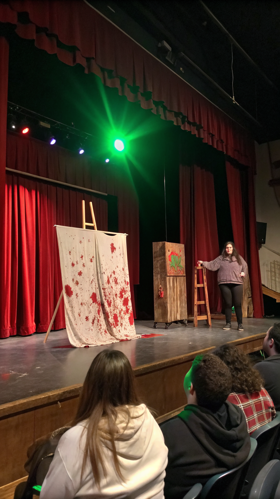
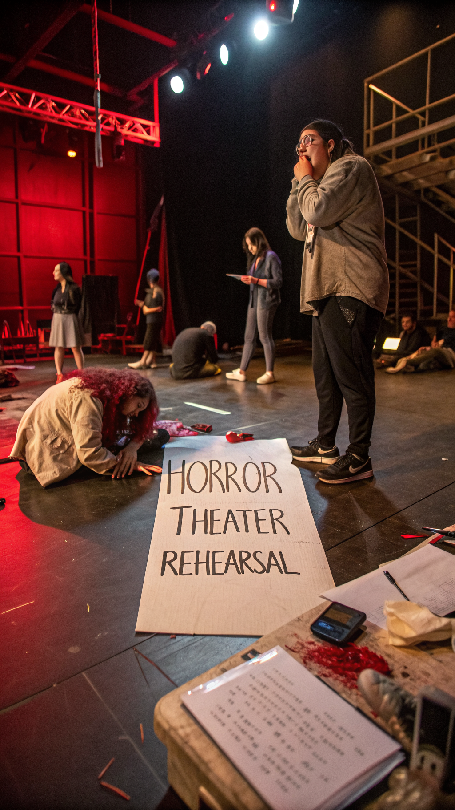
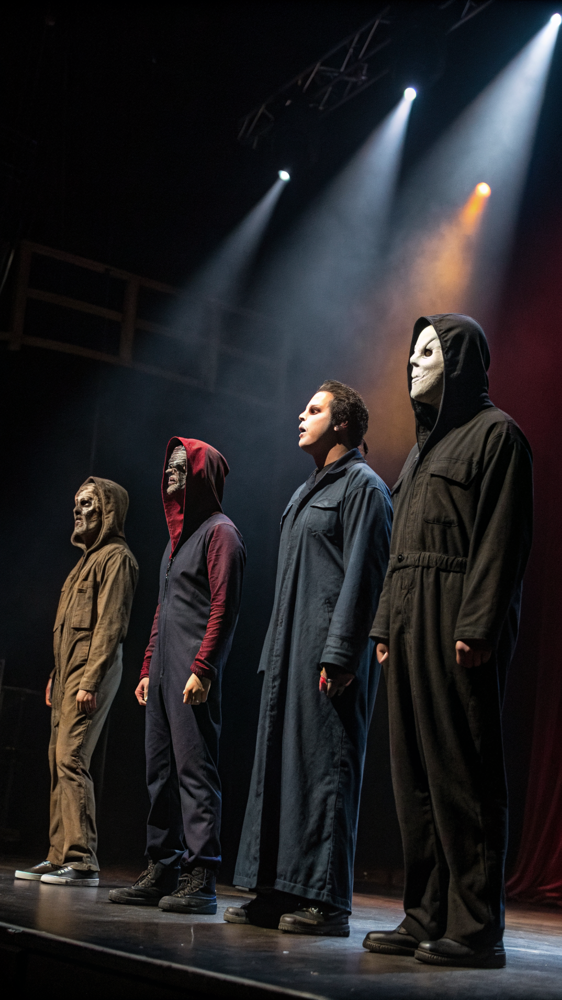
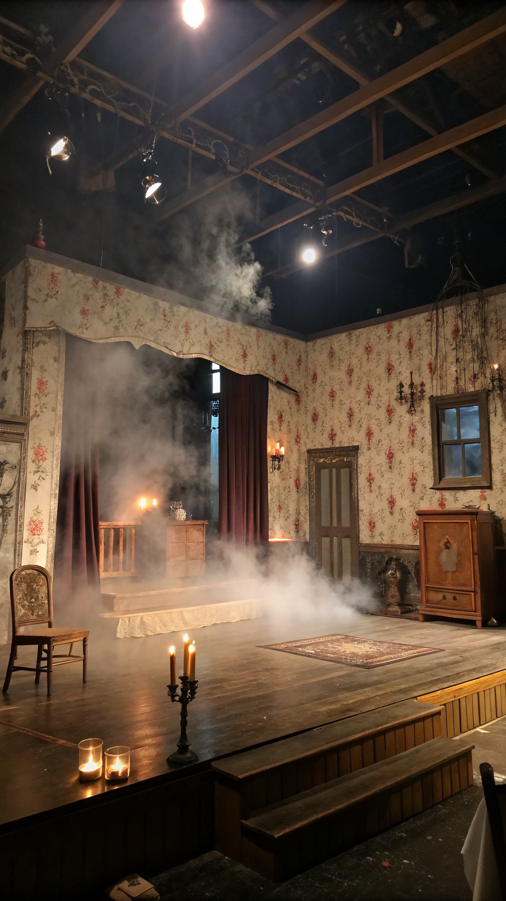
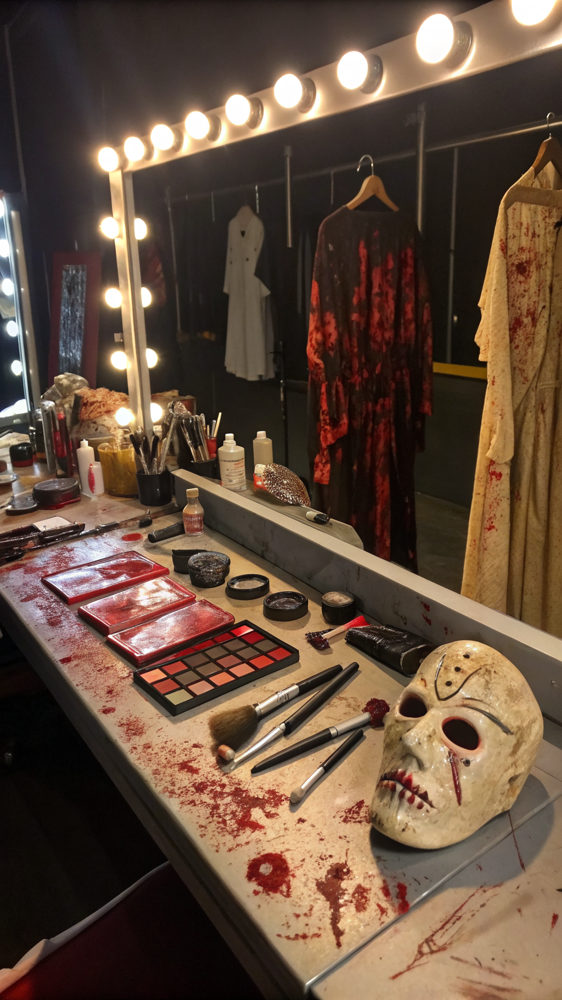
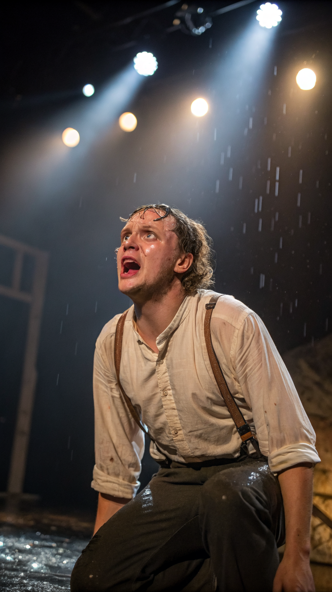
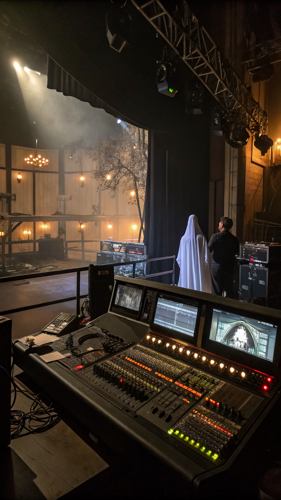
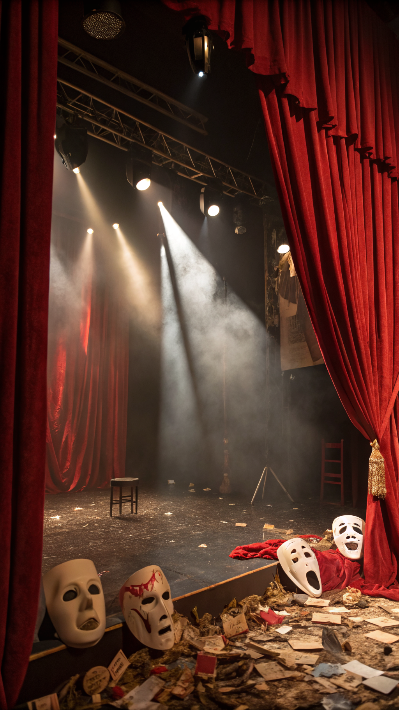
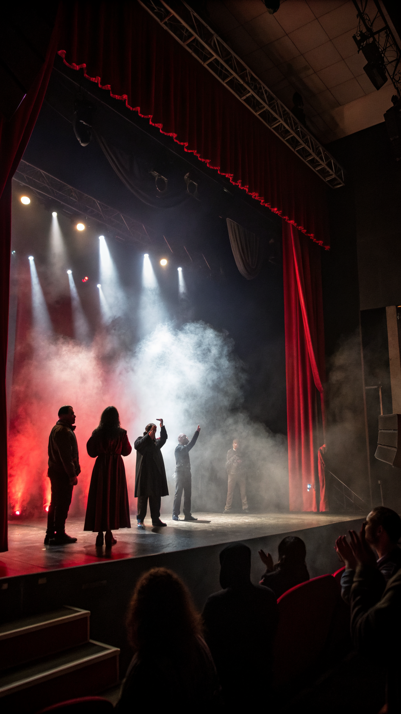

Heute geht es um unser Theaterstück Creepshow: irgendwo zwischen Horror, Trash, Kunstblut und dem Moment, in dem niemand mehr weiß, ob das Quietschen zum Sounddesign gehört oder ob gerade wirklich etwas kaputtgeht.

Creepshow erzählt die berührende Geschichte von Menschen, die sehr schlechte Entscheidungen in sehr schlechtem Licht treffen. Es gibt Schreie, Geheimnisse, fragwürdige Moral und mindestens eine Szene, bei der man denkt: Das hätte man dramaturgisch auch einfach lassen können.

Jede Figur in Creepshow wirkt, als hätte sie mindestens ein dunkles Geheimnis, zwei emotionale Schäden und drei Leichen im Keller. Das Schöne ist: Man kann sich mit niemandem identifizieren, aber genau das macht Spaß.

Das Set von Creepshow sieht aus, als hätten sich ein verlassener Keller, ein Albtraum und eine Requisitekiste geprügelt. Genau deshalb funktioniert es. Nichts ist elegant, aber alles ist maximal verdächtig.

Creepshow beweist, dass Kunstblut nicht nur Effekt, sondern Haltung ist. Wenn nach der dritten Szene schon wieder jemand rot glänzt, ist das kein Unfall – das ist visuelle Konsequenz.

Die Performance lebt davon, dass alle voll reingehen. Manchmal so sehr, dass man kurz Sorge hat, ob noch gespielt wird oder schon ein echter Nervenzusammenbruch stattfindet. Theatergold, ganz ehrlich.

Knarzen, Flüstern, plötzliche Schläge, irgendein dumpfes Poltern im Off: Creepshow nutzt Sound so, wie gute Horrorstücke es tun sollten – effektiv, unangenehm und minimal übergriffig gegenüber dem Herz-Kreislauf-System.
Die ideale Reaktion auf Creepshow ist ein Mix aus nervösem Lachen, echtem Erschrecken und dem Blick zur Sitznachbarin nach dem Motto: Hast du das auch gesehen oder bin ich jetzt Teil des Stücks?

Das Stück funktioniert nicht trotz seines Wahnsinns, sondern wegen ihm. Creepshow will nicht geschniegelt sein. Es will Atmosphäre, Übertreibung, Unruhe und Bilder, die im Kopf hängen bleiben wie ein schlechter Flurtraum nach Mitternacht.

Creepshow ist laut, schräg, gruselig, manchmal absurd und genau deshalb stark. Es fühlt sich an wie ein Fiebertraum mit Vorhang auf – und man geht raus mit dem Gefühl, gerade etwas herrlich Kaputtes erlebt zu haben.